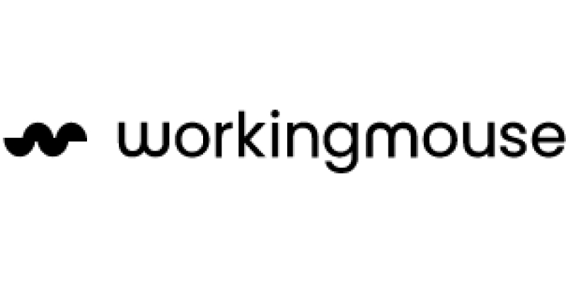
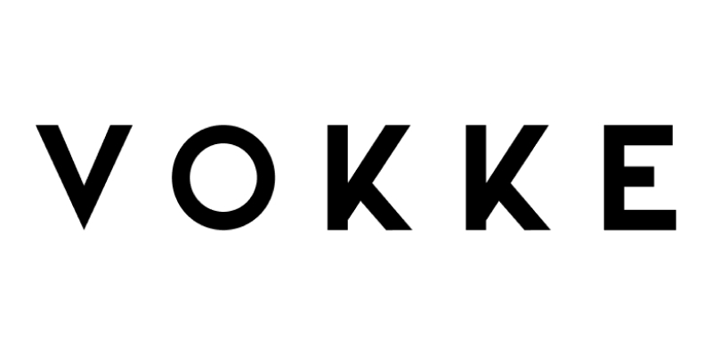
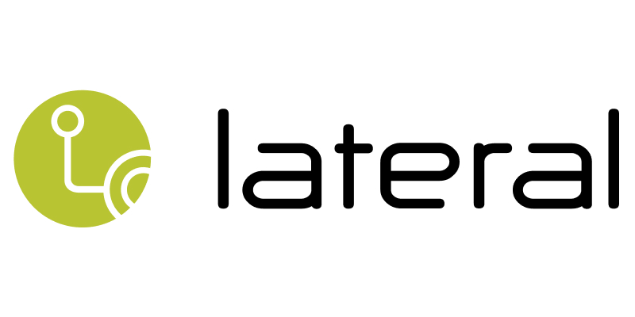
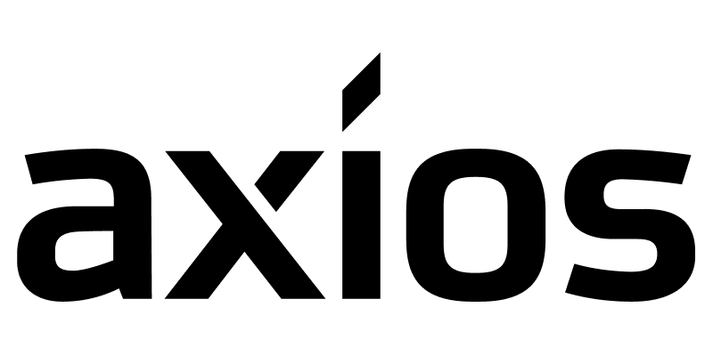
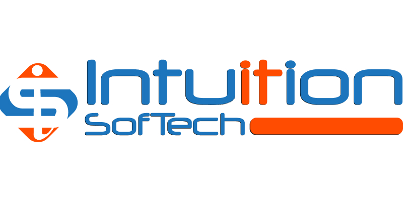
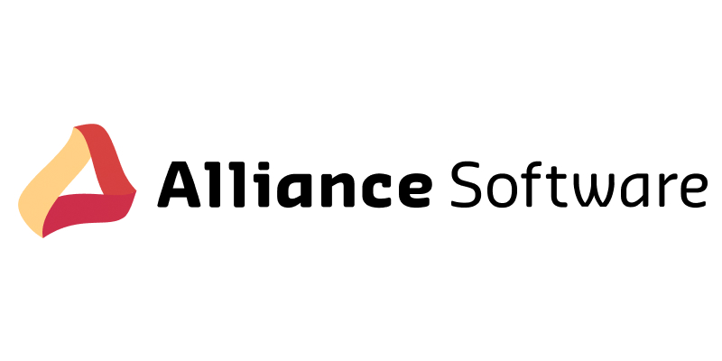
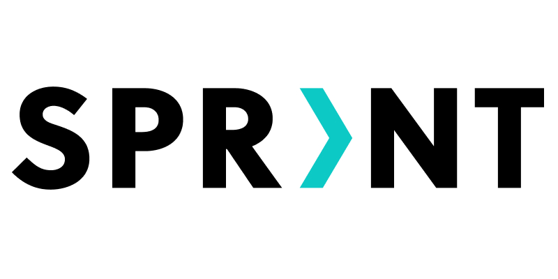
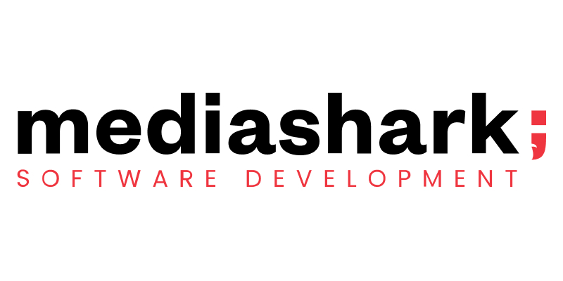

So, you’re all ready to begin your product development journey and now you need to find custom software development agencies in Australia to build it. However, I understand that your product is unique and you may be unsure about which agencies to choose from and what their credentials should be. Worry not because I’ve put together a very detailed yet crisp list of the top 10 best agencies in Australia to pick from.
Now, all the agencies in our little list are of high quality and you can’t really mess up when choosing. However, each agency will have a specialization and industries they have deep expertise in. Understanding these nuances about these custom software development agencies in Australia will put you in a better position to build better apps and build them more efficiently.
Let’s get right into our top 10 list and see how our agencies operate.
The Best Top 10 Custom Software Development Agencies in Australia For Digital Product Development
Picking the right agency for developing your app is a big task but once you have a technology partner you are happy with your entire product development process will be that much more simpler. However, when picking the service provider for you make sure that you see how their services align with your business and your project. Because once you choose an agency it's just a hassle to switch to another because each agency works differently.
Firstly, the major aspect you should look for when picking from custom software development agencies in Australia is whether the agency you choose is a good culture fit for your organization or team. Because when you’re building custom software it's likely that you will work with your technology partner for a long time and you need to make sure that your communication, workflow and personnel align with the agency.
Now, without wasting any time let’s understand what our top 10 custom software development agencies in Australia are all about and how you can benefit from them.
1. Sparkout Tech Solutions Inc.

Sparkout Tech Solutions Inc is a well established name among custom software development agencies in Australia and it is a full service agency with a wide range of offerings. Sparkout is known for building robust and scalable products that are at the same time functional and provide users with a great user experience.
One of Sparkout’s major highlights is that it has a keen focus on building modern solutions with intuitive design and using emerging technologies like blockchain and AI. Apart from these technologies Sparkout also works with stacks like IoT, ML, cloud computing and augmented reality. Another highlight of Sparkout is that as one of the leading custom software development agencies in Australia it provides solutions for a wide range of industries and use cases like fintech custom software, healthcare solutions, logistics, travel, education, governments and e-commerce. Sparkout is well known for working closely with its clients to provide highly customized solutions that not only meet the clients’ business goals but also their users’ expectations. When it comes to the services it provides Sparkout gives you access to industry leading professionals in mobile and web app development, blockchain development, cloud solutions, AI/ML development and UI/UX design services.
Pros:
- As one of the leading and established custom software development agencies in Australia Sparkout is highly focused on emerging technologies like blockchain, AI/ML and IoT.
- A strong focus on being collaborative with clients to provide customized and tailored solutions for their businesses.
- It is a full service agency that works with multiple types of development services and technologies.
- An experienced agency with a track record of over 7 years building and scaling complex products.
Cons:
- If you have a very complex to build using advanced technologies like AI/ML and blockchain the costs associated with development may be on the higher side.
- As one of the top custom software development agencies in Australia Sparkout’s services are quite elaborate and detailed which means that the timelines for development can be on the longer side especially for complex projects that implement agile methodologies.
Website - www.sparkouttech.com
2. WorkingMouse

WorkingMouse is a very prominent name in Australia being a software development agency well known for their innovative use of the Codebots technology. Their use of Codebots means that they can easily focus on high level problem solving while reducing the time it takes to write boilerplate code.
This means that in most cases you get faster delivery of your products and improved efficiency. As one of the leading and trusted custom software development agencies in Australia WorkingMouse works closely with their clients to build custom software solutions that are highly tailored to their clients. Additionally, they have unique service offerings like app development, upgradation of legacy systems and integration of third party services.
Pros:
- Their development process is rapid with the implementation of Codebots.
- They have a very strong focus on user centric design and are known for using agile methodologies for their projects.
- They also provide a very transparent and collaborative development process for their clients as one of the leading custom software development agencies in Australia.
Cons:
- If you’re looking for a service provider that uses more of traditional coding practices then they may not align with your requirements.
- Since their work process uses AI technologies their cost for development could be on the higher side.
- If you have very complex projects that need expert attention then you may need to also have an option to review the code manually.
Website - www.workingmouse.com.au
3. Vokke Software

Vokke Software is another well known name in the Australian software development space and they are known for building highly robust, scalable and secure solutions for their clients. As one of the top custom software development agencies in Australia Vokke specializes in working with businesses who want to build solutions for enterprises.
Their major focus is to help businesses streamline their internal processes and increase the efficiency of their operations. Vokke also has deep expertise in industries like finance, healthcare and education and can provide you with solutions that are tailored to meet the industry standards. A highlighting feature of Vokke is that they have deep knowledge about complex systems and architectures which they use to make software that easily integrates with existing systems.
Pros:
- As one of the trusted custom software development agencies in Australia they have a very strong focus on building secure solutions that comply with regulations.
- Their major focus and expertise is in building solutions that are enterprise grade.
- They are highly experienced in handling complex projects that are large scale.
Cons:
- If you’re looking to build an enterprise level solution for business then the costs may be on the higher side.
- Their services may not align with your needs if you’re a new startup or a small business.
- If your solution is highly complex then the timelines for building it could be extended because of the comprehensive nature of their services as one of the leading custom software development agencies in Australia.
Website - www.vokke.com.au
4. Lateral

Lateral is another established name in Australia and you will have probably heard of them if you’ve been in the space for long. They offer a wide array of service offerings which includes mobile app development, development for web apps and enterprise solutions.
Additionally, they have a strong focus on building solutions that are innovative and their products are known for meeting both the current requirements of their clients and even future challenges. Their expertise is also very wide and they work in industries like retail, finance, healthcare and more as one of the top custom software development agencies in Australia.
Pros:
- Their focus is very high on building scalable solutions that are also sustainable at the same time.
- Their expertise is pretty wide and covers a host of different industries an specializations.
- Their focus is also very high on building solutions with innovative technologies and an emphasis on crafting great user experiences.
Cons:
- If you’re a small scale business with a simple product to develop then their services may not align with your budget.
- Since they provide an in depth range of services with focus on advanced technologies their delivery timelines may be on the longer side.
- As one of the leading custom software development agencies in Australia their focus on non-enterprise projects may be limited.
Website - www.lateral.com.au
5. Sentia Australia Pty Ltd
Sentia is a leading software development firm from Australia and their major focus is on creating digital solutions that drive their clients’ business growth. Their services are full cycle and can help you with mobile app development, web app development and cloud solutions with a keen focus on scalability and performance.
Sintia has a great reputation for working with clients in different industries use cases which include logistics tracking solutions, healthcare apps, education and human resource management software. Another highlighting feature about them as one of the top custom software development agencies in Australia is that one of their major focuses is on digital transformation and to help businesses adapt to new technologies.
Pros:
- One of their major highlights is that they give strong focus on helping their clients with digital transformation.
- They have deep expertise in providing cloud solutions for their customers.
- Another major focus of theirs is in making solutions scalable and high performing when it comes to custom software development.
Cons:
- Because of the nature of their services and wide range of expertise their costs associated with development may be on the higher side.
- As one of the leading custom software development agencies in Australia their approach to development is very consultation heavy the timelines for product delivery may be on the longer side.
- Their major focus in terms of the technology is in building cloud solutions and web apps which may not align with all businesses.
Website - www.sentia.com.au
6. Axios IT Pty Ltd

Axios is a name among the well known agencies in Australia and their focus is on building custom software solutions that meet the specific needs of businesses. Their services are also in a wide range which includes web app development, mobile app development, cloud computing and DevOps services.
As one of the leading custom software development agencies in Australia they also help businesses improve the efficiency of their operations through technology. They do this by creating scalable solutions that you can easily integrate with your existing systems and processes. Another thing to note about Axios is that they work very closely with their clients which starts from the project planning stage all the way up to deployment and post launch support. They follow this approach to ensure that their solutions align with your business goals and operational requirements.
Pros:
- They have a very high focus and expertise in building cloud native solutions and DevOps solutions.
- Being one of the top custom software development agencies in Australia Axios’ services cover project management and post launch support for your projects from end to end.
- One of their keen focuses is on building solutions that integrate seamlessly with your existing systems.
Cons:
- If you’re looking for cloud native solutions for your project then the associated costs could be on the higher side.
- Their focus outside of cloud solutions and DevOps services is limited which may not align with you if you’re looking for other solutions.
- If your project is highly complex with lots of advanced features then the timelines for delivery could be on the longer side.
Website - www.axiosdev.com.au
7. Intuition SofTech

Intuition SofTech is one of the leading custom software development agencies in Australia and are well known for their versatility providing cutting edge solutions for their clients across various industries. Their major areas of focus in software services are web development, mobile app development and technology consulting.
They also have a keen focus on using technology to help their clients stay competitive in today's digital and business landscape. Intuition is known for their customer centric approach to software development and they closely work with their clients to deeply understand their requirements and build tailored solutions. Apart from software development services intuition is also known for helping companies with cloud computing solutions as one of the top custom software development agencies in Australia where they can modernize their IT infrastructure to enhance scalability and cost efficiency.
Pros:
- Their service offerings are fairly wide with both software development and technology consulting.
- Their focus is high on client collaboration and software customization which is great for new product development.
- Since their major expertise is in providing cloud solutions you can easily build software that scales with your business.
Cons:
- Since their focus is on the cloud and building scalable systems their costs for development could be on the higher end.
- As one of the top custom software development agencies in Australia their timelines for complex cloud based projects with lots of features could be on the longer end.
- Their focus is high on building solutions with emerging tech which may not align with all business models.
Website - www.intuitionsoftech.com.au
8. Alliance Software

Alliance Software is another top tier software development agency in Australia that specializes in helping you streamline your business’s operations using software that is tailor made. Their service offerings are spread wide and they can provide you end to end development services which begins from the initial discovery stage to post launch support for your products.
As one of the leading custom software development agencies in Australia they have a well equipped and experienced team that specializes in multiple technologies. These include web app and mobile app development, cloud solutions and enterprise software solutions. Additionally, they have a strong focus on applying agile project management practices and build using tech stacks like .NET,PHP and Java.
Pros:
- They are well known for offering end to end services which includes post launch support.
- They are very experienced in building solutions using scalable and secure technologies.
- They have a very keen focus on building solutions for you that are tailored to your specific business needs and challenges.
Cons:
- They are one of the top custom software development agencies in Australia and because of that their costs for developing complex products may be on the higher side.
- Since their focus on innovative tech like AI/ML and blockchain is limited their services may not align with you if you’re building an app using these tech stacks.
- Their primary clientele is medium to large businesses which may be limiting if you have a small business.
Website - www.alliancesoftware.com.au
9. Sprint

Sprint is a full service agency that hails from Australia and is known for providing end to end services for their clients which includes mobile app and web app development and custom software development. As one of the trusted custom software development agencies in Australia their major focus and expertise is in helping businesses digitally transform and integrate tech into their operations.
They are well known for creating custom software solutions that are scalable, user friendly and tailored to their clients’ business. Additionally, they are also known for involving their clients throughout the development process and they implement an agile development approach to maintain transparency and flexibility.
Pros:
- Their major emphasis is on providing you with scalable and user friendly software solutions.
- Since they implement agile development practices it ensures that you are involved in the development process throughout the journey.
- As one of the leading custom software development agencies in Australia they are well known for helping businesses digitally transform and using technology to streamline their operations.
Cons:
- Their focus is building highly complex and enterprise level software which may not align with all business requirements.
- They have limited focus on advanced technologies like AI/ML and blockchain so if you’re looking for those solutions then their services may not align with your needs.
- If you have a fairly large project to build then their delivery timelines could be on the longer side.
Website - www.sprintdigital.com.au
10. Media Shark

Media Shark is one of the established custom software development agencies in Australia and is known for being dynamic in their work process. Their specialization is in building custom mobile apps and web apps with a high focus on creating solutions that are both engaging and user friendly.
They provide an end to end service which includes technology consultation, custom software development and post launch support. Additionally, they work with businesses of all sizes and are keen on building solutions that are cutting edge for multiple platforms like Android and iOS. One of their major highlights is that they are known for creating highly interactive solutions that have a strong emphasis on design and user experience.
Pros:
- As one of the top custom software development agencies in Australia their emphasis is very strong on creating mobile apps that are highly design focused and provide a great user experience.
- Their service offerings are comprehensive which starts from strategy to support after launch.
- They specialize in building custom solutions that are interactive and engaging for your users.
Cons:
- Since their major focus is on building apps for mobile platforms if you need custom solutions for other platforms then their services may not align with your requirements.
- Their focus on building custom software for enterprises is limited so if you’re looking for that kind of a solution then their services may not align with your needs.
- Although they are one of the leading custom software development agencies in Australia their emphasis on emerging technologies like AI/ML and blockchain may be limited if you’re looking for those solutions.
Website - www.mediashark.com.au
Summarizing Our Top 10 List of Custom Software Development Agencies in Australia
When you’re building custom software for your business hiring an agency to fulfill your requirements can save you a lot of time and money. However, picking from the best custom software development agencies in Australia is a big task and you need all the relevant information before making your decision. If you’re read this far then you don’t have that problem and are now ready to start your project. Remember that our list covers the top 10 of the best agencies in Australia for software development. You can get great quality products from all of these providers but choosing the right fit for your business will make your development process much seamless.
If our little blog helped you out then consider sharing it with a founder or business owner it might help.